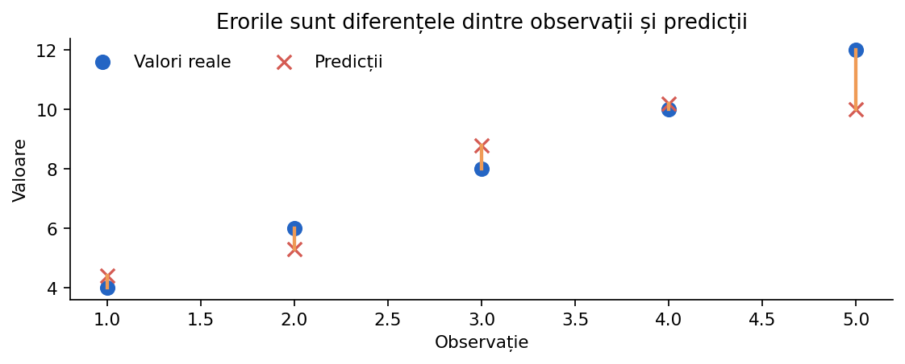

Metrici de evaluare
Un model nu este bun fiindcă a fost antrenat, ci fiindcă face predicții utile pe observații pe care nu le-a văzut. În această lecție învățăm să cuantificăm erorile și să alegem metrica potrivită problemei.
De ce avem nevoie de metrici?
Înainte să calculezi o metrică, verifică tipul problemei: regresie dacă rezultatul este un număr; clasificare dacă rezultatul este o etichetă. Pentru clasificare binară pot fi relevante probabilitățile estimate, nu doar clasele prezise.

y_real = [4, 6, 8, 10, 12] y_pred = [4.4, 5.3, 8.8, 10.2, 10.0] for real, pred in zip(y_real, y_pred): print(f"real={real:4.1f}, pred={pred:4.1f}, eroare={real-pred:+.1f}")
Separarea datelor: train, validare și test
Regulă practică: pentru orice preprocesare care învață statistici (medie, deviație standard, vocabular, valori de imputare), utilizează fit doar pe train și transform pe validation/test. În scikit-learn, Pipeline ajută la evitarea acestor erori.
from sklearn.model_selection import train_test_split X = [[i] for i in range(40)] y = [2 * i + (i % 4) for i in range(40)] X_dev, X_test, y_dev, y_test = train_test_split( X, y, test_size=0.2, random_state=42 ) X_train, X_val, y_train, y_val = train_test_split( X_dev, y_dev, test_size=0.25, random_state=42 ) print(len(X_train), len(X_val), len(X_test))
Eroare, eroare absolută și eroare pătratică
y și predicția ŷ, eroarea semnată este e = y − ŷ. Semnul ne arată dacă am supraestimat sau subestimat. Dacă am face media erorilor semnate, cele pozitive și negative s-ar putea anula! De aceea folosim valoarea absolută |e| sau pătratul e².Exemplu: erorile +5 și −5 au media 0, dar modelul nu este perfect. MAE va fi 5, iar MSE va fi 25.
erori = [5, -5] print(sum(erori) / len(erori)) print(sum(abs(e) for e in erori) / len(erori)) print(sum(e ** 2 for e in erori) / len(erori))
MAE — Mean Absolute Error
Exemplu: pentru erorile 1, −2, 3, MAE = (1+2+3)/3 = 2.
def mae(reale, prezise): n = len(reale) if n == 0: raise ValueError("Nu există observații") total = 0 for y, p in zip(reale, prezise): total += abs(y - p) return total / n print(mae([2, 6, 7], [3, 4, 10]))
MSE și RMSE — penalizarea greșelilor mari
În problemele de regresie din concurs, dacă evaluatorul folosește RMSE, nu alege modelul după MAE doar fiindcă are această metrică mai mică.
def mse(reale, prezise): total = 0 for y, p in zip(reale, prezise): total += (y - p) ** 2 return total / len(reale) valoare = mse([1, 2, 3], [1, 3, 6]) print(f"MSE = {valoare:.3f}") print(f"RMSE = {valoare ** 0.5:.3f}")
R² — comparația cu o predicție constantă
Atenție: pentru o țintă constantă, expresia matematică standard nu este definită. Instrumentele software pot utiliza convenții explicite pentru acel caz.
from sklearn.metrics import r2_score print(r2_score([2, 4, 6], [2, 4, 6])) print(r2_score([2, 4, 6], [4, 4, 4])) print(r2_score([2, 4, 6], [10, 10, 10]))
Accuracy în clasificare
De aceea trebuie analizată distribuția claselor și, la nevoie, alte metrici precum recall sau balanced accuracy.
y_true = [0, 0, 0, 0, 0, 1] y_pred = [0, 0, 0, 0, 0, 0] corecte = sum(a == b for a, b in zip(y_true, y_pred)) print(f"Accuracy = {corecte / len(y_true):.3f}")
Precision, recall și F1
Exemplu: într-o problemă de detectare a mesajelor spam, multe alarme false pot fi costisitoare; într-o problemă de detectare a defecțiunilor grave, ratarea cazurilor poate fi mai periculoasă.
from sklearn.metrics import precision_score, recall_score, f1_score y_true = [1, 1, 1, 1, 0, 0] y_pred = [1, 1, 0, 0, 1, 0] print(precision_score(y_true, y_pred)) print(recall_score(y_true, y_pred)) print(f1_score(y_true, y_pred))
Probabilități: log-loss, ROC-AUC și PR-AUC
ROC-AUC măsoară calitatea ordonării exemplelor pozitive față de negative de-a lungul pragurilor; PR-AUC / Average Precision evidențiază relația precision–recall și poate fi deosebit de informativă când clasa pozitivă este rară. Nu confunda ROC-AUC cu accuracy și nici PR-AUC cu F1 calculat la un singur prag.
from sklearn.metrics import roc_auc_score, log_loss, average_precision_score y_true = [0, 1, 0, 1, 0, 1] p = [0.12, 0.88, 0.31, 0.70, 0.45, 0.66] print('ROC AUC:', roc_auc_score(y_true, p)) print('AP:', average_precision_score(y_true, p)) print('Log-loss:', log_loss(y_true, p))
Media micro, macro și weighted
from sklearn.metrics import classification_report y_true = [0, 0, 0, 0, 1, 1, 2] y_pred = [0, 0, 0, 1, 1, 0, 0] print(classification_report(y_true, y_pred, zero_division=0))
Metricile din scikit-learn și scorer-ul competiției
model.score(X, y) nu reprezintă aceeași metrică pentru toate modelele: deseori este accuracy pentru clasificatori și R² pentru regresori. Când competiția cere MAE, macro-F1 sau log-loss, calculează explicit metrica solicitată.La cross-validation, scoring="neg_mean_absolute_error" returnează valori negative deoarece API-ul de scor maximizează valoarea. O valoare -2 este mai bună decât -5: MAE corespunzător este 2, respectiv 5.
from sklearn.metrics import mean_absolute_error from sklearn.dummy import DummyRegressor model = DummyRegressor(strategy='mean') X = [[1], [2], [3], [4]] y = [2., 3., 4., 9.] model.fit(X, y) pred = model.predict(X) print('R²:', model.score(X, y)) print('MAE:', mean_absolute_error(y, pred))
De reținut pentru ONIA
Compară metodele în condiții corecte: același protocol de evaluare, date de validare separate și o metrică relevantă pentru problema rezolvată. Testul final nu trebuie folosit la alegerea hiperparametrilor.
Exemplele din această lecție sunt didactice; la competiție verifică întotdeauna enunțul, formatul datelor și metrica oficială.
Pentru detalii de implementare: Model evaluation — scikit-learn și Common pitfalls.